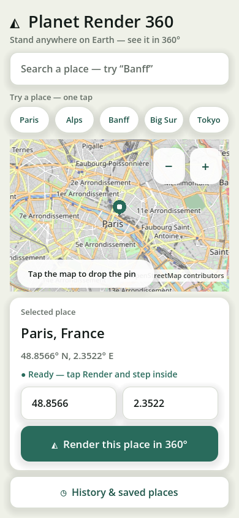
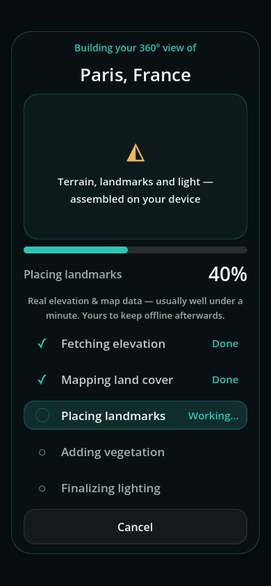
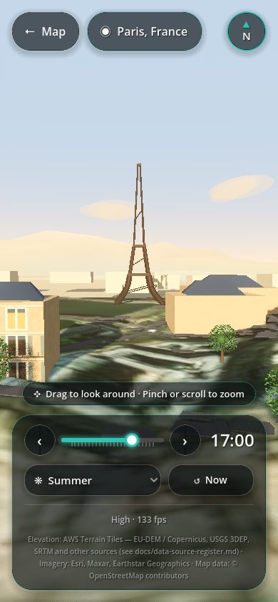
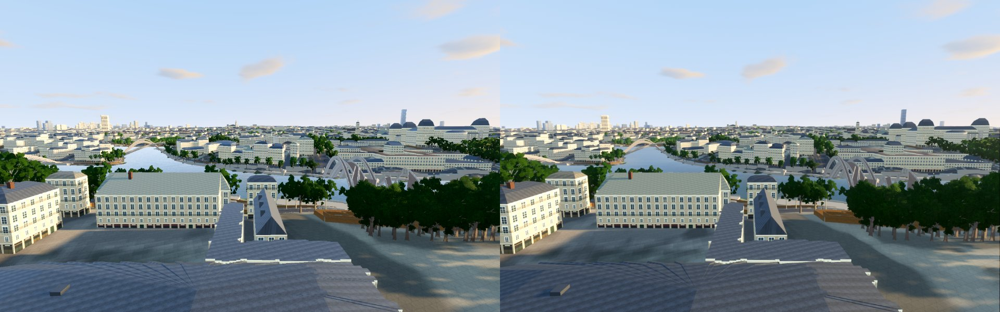
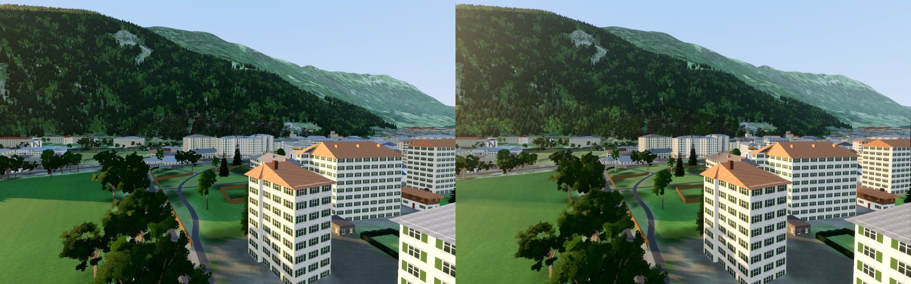
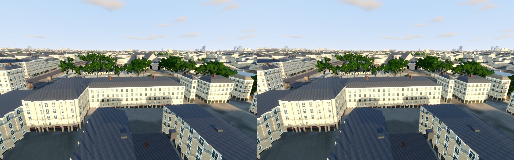
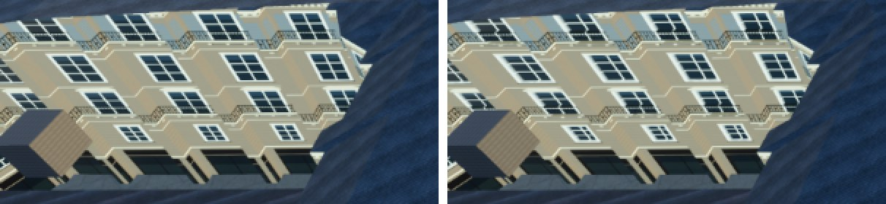

This document describes how Planet Render 360 turns a latitude and longitude into a walkable-looking panorama: the architecture, the data it fetches, the staged generation pipeline, the world model, rendering, caching and verification.
docs/ (world-model contract, data-source register, fidelity scorecard) and .agents/plans/. Where they differ, the code and the contract win.Pick a place by tapping a world map, searching, or typing coordinates. The app fetches real elevation, imagery, map features and climate for that point, builds a 3D world in true metres around it, and drops you in the middle with a drag-to-look 360° camera.
LocationData.The stack is deliberately small: Godot owns UI, networking and rendering (no Flutter, no web view); GDScript is the only runtime language; Blender and GDAL are developer-machine tools whose output is committed to assets/. Godot's renderer targets Vulkan/Metal-class devices with Compatibility as the fallback.
scripts/main.gd is the screen manager. It owns the pipeline, the cache store and the settings, wires their signals to the screens, and shows exactly one screen at a time.
MapTileView), centred on the selection; a progressive preview loads first, then detail centre-out.stage_changed and progress_changed; cancel returns to the picker within a second.canvas_items stretch, and phone / tablet / desktop breakpoints in responsive.gd.


No source enters the fetch layer until its row in docs/data-source-register.md is complete: endpoint, format, licence, direct-mobile access, free-without-key, and a fallback. Each source has exactly one fetcher module.
LocationData contract; generation code never sees raw provider payloads.| Need | Source | Format & access | Licence | Fallback |
|---|---|---|---|---|
| Elevation | AWS Terrain Tiles | PNG, h = R·256 + G + B/256 − 32768 m | Attribution (EU-DEM, USGS, SRTM…) | lower zoom → cache → procedural DEM |
| Imagery | Esri World Imagery | JPEG 256 px tiles, bounded pool | Esri ToU, noncommercial | lower zoom → cache → vertex colour |
| Buildings, roads, land | OSM Overpass | JSON out geom, identifying UA | ODbL | cache → absence-only dressing |
| Climate | CHELSA V2.1 | GeoTIFF row reads, ~0.3–0.6 MB/place | CC BY 4.0 | latitude rules (ClimateModel) |
| Weather | Open-Meteo | JSON current conditions | CC BY | omit weather dressing |
| Search / map | Nominatim · OSM tiles | JSON ≤1 req/s · PNG tiles | ODbL | gazetteer · blank map + pin |
| Textures | Poly Haven (build time) | 13 PBR sets, 1k jpg in assets/ | CC0 | procedural textures |
GenerationPipeline (scripts/generation/pipeline.gd) runs five frozen stages. All network fetches start together in run() and overlap; each stage awaits only what it needs, with a bounded wait so a slow source degrades a layer instead of blocking the view.
stage_changed(i, label, "in_progress" | "done"); progress_changed reports real items done/total, never a timer.Fallbacks run only on absence of real data, in a fixed order per layer. They log with print (an expected outcome offline), so a permanently broken endpoint is found by grepping for fetch failed.
After stage 3 the pipeline constructs GroundTruth once and View360 builds the world on a background thread. A cancel bumps the generation id in main.gd, so a superseded world is freed rather than shown.
The world-model contract (docs/world-model-contract.md) freezes three things: the LocationData fields, the pipeline stage order, and preset semantics. Changing any of them needs a contract task first.
(data: LocationData, ground: GroundTruth), emit metre-space Node3D subtrees, and build materials only through MaterialLibrary.WorldScale owns every conversion. One unit is one metre horizontally and vertically — the v1 220-unit world and adaptive vertical squash are gone. +X is east, +Z is south (north is −Z).
The detailed world is 2400 m across (DETAILED_EXTENT_M). The render origin is set once per place at the viewpoint (lat, lon, centre_elevation_m), so the camera always works near the floating-point sweet spot.
Built once per place from DEM posts, OSM polygons and waterways: a smoothed surface flattened only where OSM says so (building pads, roads) with water carved in. All samplers are pure bilinear reads — outside the extent they clamp to the nearest edge and never return NaN.
TerrainBuilder.build_world(data, ground) assembles the scene in dependency order. Later layers sample the surfaces earlier ones define, so trees never land on roads, buildings or water.
_adopt_flat lifts its children into the root and records the layer they came from.Buildings are the largest subsystem (≈20 classes). Real OSM footprints are extruded first; procedural infill is absence-only and style-matched (InfillPlanner, SettlementMap) and never contradicts mapped data.
GroundTruth; satellite drape and land-class tint in GroundMaterial's shader.StreetProps.ClimateModel is the sole interpreter of CHELSA normals: snow line per season, treeline, biome and summer dryness.TreeSpecies picks a species mix from climate and land cover; TreeMeshLibrary builds procedural meshes, instanced near and impostors far.VegetationMask rasters keep trees and props off roads, buildings and water.The 360 camera never translates, so level of detail is static: LodRing writes Godot visibility ranges once per build, with a 12% fade hysteresis. A preset switch only re-runs apply() — nothing is rebuilt, moved or recoloured.
| Ring | Reach | Content |
|---|---|---|
| near | 200–700 m | Full geometry with roofline detail (chimneys, dormers, rooftop plant) |
| mid | to 1.2 km | Building masses merged per material and 400 m cell; shared distant facades |
| trees | 600–1700 m | Instanced species meshes, impostors past the cap |
| far city | 4.5–12 km | Batched textured masses per octant × distance band, real towers ≥ 50 m |
| far DEM | to 33 km | ~12.5 m/px to 4 km, ~25 m/px to 9.5 km, ~100 m/px to 33 km, with imagery drapes |
Reach ranges span Fast → Ultra (DETAIL_M, TREES_M, FAR_CITY_M in lod_ring.gd). Draw calls scale with cells × materials, not with buildings.
The view opens on the place's golden hour; the time slider and "now" button move the true solar position for the location's date. Live Open-Meteo weather drives cloud cover and precipitation, and RoofSnow and ClimateModel lay snow on roofs and ground from the season and CHELSA snow days. RenderQuality adds the photoreal layer per tier (SSAO, volumetrics, window recesses on Ultra).
One user choice matters: the render preset. It trades accuracy for time — loading time paid once, frame time paid every frame. GroundTruth resolution is preset-independent, so switching presets never moves objects.
| Fast | Balanced | High | Ultra | |
|---|---|---|---|---|
| Fidelity level | 1 | 2 | 2 | 3 |
| Terrain mesh posts / side | 96 | 128 | 192 | 256 |
| Satellite zoom | z16 | z16 | z17 | z17 |
| Max real buildings | 600 | 1 200 | 2 500 | 6 000 |
| Trees (urban / rural) | 70 / 90 | 120 / 170 | 170 / 230 | 380 / 500 |
| Render scale | 65% | 85% | 100% | 125% |
| Shadows (distance) | off | 2.4 km | 2.4 km | 4 km |
| Cloud octaves | 3 | 4 | 5 | 5 |
| First build / revisit | ≤20 s / ≤3 s | ≤45 s / ≤5 s | ≤75 s / ≤5 s | 1–2 min / ≤8 s |
Two independent caches with separate budgets: the data cache holds fetched tiles and responses, the world cache holds finished worlds. A ~200 MB world can never evict the DEM, OSM or satellite tiles it was built from.
CacheStore is also the history store: a JSON file in user://. Generated terrain is reproducible from the stored coordinates and seed, so history entries double as cache keys and carry their v2 key set.
Legacy v1 keys (dem_, sat_, osm3_) are ignored, never migrated; the LRU reaps them first under cap pressure. Area keys quantise coordinates to round(deg × 1000).
"Download for offline" in the picker runs OfflineDownloader, which warms every on-device cache for a place — DEM, imagery, OSM, far field and climate — with progress in the picker and a history entry on success.
Recognisable structures come from two paths. A curated registry of famous landmarks is modelled on the fly in true metres; any other notable OSM feature near the viewpoint is matched to an archetype (church, tower, dome, stadium…).
LocationData). Each entry has a trigger radius (2.5–13 km); inside it, the landmark is placed at its true bearing and distance.| Landmark | Class | Height |
|---|---|---|
| Eiffel Tower | LandmarkEiffel | 330 m |
| Tokyo Tower | LandmarkTokyo | 332.9 m |
| Elizabeth Tower | LandmarkWestminster | 96 m |
| Colosseum | LandmarkColosseum | 48 m |
| Sagrada Família | LandmarkSagrada | as built 2026 |
| Giza · Liberty | LandmarkMonuments | true metres |
| Sydney Opera House | LandmarkOpera | true metres |
| Helsinki · Turku cathedrals | LandmarkCathedrals | true metres |
LandmarkMesh accumulates merged geometry; LandmarkMaterials supplies calibrated photographic PBR materials.assets/eiffel.glb is the Blender pipeline proof (assets_src/blender/).LandmarkArchetypes, within the haze limit.Every class is one GDScript file under scripts/ and stays at or under 500 lines; tools/check_class_size.sh fails the build on any violation. Large concerns split into focused helpers (for example building_builder → walls, heights, detail, roofs).
data/ | Fetchers, parsers, contract, cache, history |
generation/ | Pipeline, ground surface, every builder, materials |
render/ | Camera, atmosphere, LOD, governor, presets, world cache |
screens/ | Picker, map tiles, loading, 360 view, history, settings |
scripts/*.gd | Screen manager, theme, HUD style, responsive rules |
## doc comment stating its responsibility and the contract or plan task it implements.(data, ground) signatures; heavy mesh work on a background thread via MeshArrays.| Area | Tests |
|---|---|
| Contracts & flow | smoke, flow, class_registry, build_guard, leak |
| Data parsing | osm, dem, tiles, search, weather, climate |
| World & scale | world_scale, terrain_scale, scenery, architecture, facade_relief, far_city, lod |
| Sky & light | sky, solar (vs ephemeris) |
| UI | responsive, zoom_search, map_pan, progressive_map, exit_tile, settings, loading_building |
| Landmarks | landmark |
| Windowed | screenshot, world_cache, fidelity_scorecard |
Run any test with godot --headless --script tests/<name>.gd; windowed tests drop --headless. The fidelity scorecard (docs/fidelity-scorecard.md) checks golden locations — Paris, Interlaken, Banff, Big Sur, Turku.
Ultra-tier captures from the photoreal review (visual-plan/reviews/photoreal-ultra-2026-10-30/).




© OpenStreetMap contributors (ODbL) · Elevation: AWS Terrain Tiles / Tilezen (EU-DEM / Copernicus, USGS 3DEP, SRTM and others) · Imagery: Esri, Vantor, Earthstar Geographics and the GIS User Community · Climate: CHELSA V2.1 (Karger et al., 2017, CC BY 4.0) · Weather: Open-Meteo (CC BY) · Search: Nominatim · Textures: Poly Haven (CC0) · Foliage textures: own procedural work (CC0). Code distributed under the MIT License.